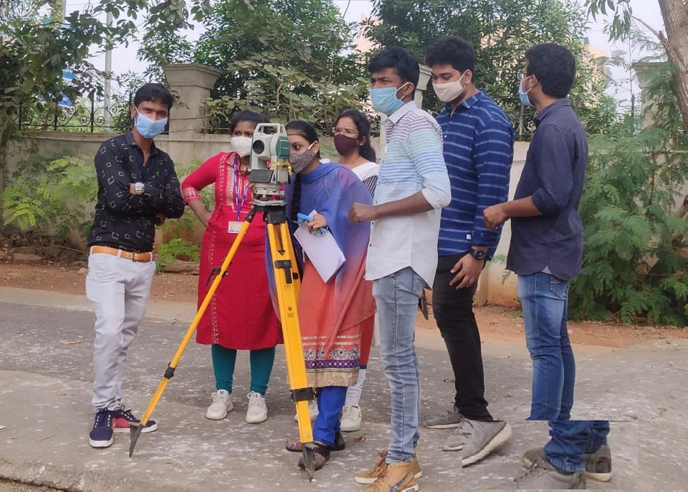

Civil Engineering is one of the oldest and broadest branches of engineering, focusing on the design, construction, and maintenance of infrastructure projects. This includes buildings, roads, bridges, dams, water supply systems, and more. Civil engineers play a vital role in shaping the built environment and ensuring the safety, sustainability, and functionality of public infrastructure. The curriculum covers topics like structural analysis, materials science, geotechnical engineering, transportation engineering, and environmental engineering. Civil engineering students are trained to use advanced tools and techniques for planning, designing, and executing large-scale projects. The branch offers diverse career opportunities in construction, urban planning, and environmental management
Civil Engineering integrates scientific principles with practical applications to solve challenges related to the construction and development of infrastructure. Students in this field learn to design and manage construction projects, ensuring that they meet safety standards, sustainability goals, and community needs. The field encompasses various specializations such as structural engineering, environmental engineering, transportation engineering, and water resources management

Civil Engineering
We shape our buildings, thereafter they shape us.

Computer Science and Enginerering Lab Facility
The Civil Engineering lab facilities are equipped with advanced technology and instruments to facilitate practical learning and research. Students have access to specialized labs for studying the behavior of materials, soil mechanics, and structural analysis. The Hydraulics Lab helps students understand fluid flow and water resource management, while the Concrete Lab enables them to work with various concrete mixes and test their strength and durability
The Civil Engineering lab facilities at our college are designed to bridge the gap between theoretical knowledge and practical application. The labs offer students opportunities to work with advanced software tools for structural modeling and analysis, alongside physical experiments.
The Civil Engineering lab facilities at our college are designed to bridge the gap between theoretical knowledge and practical application. The labs offer students opportunities to work with advanced software tools for structural modeling and analysis, alongside physical experiments.
